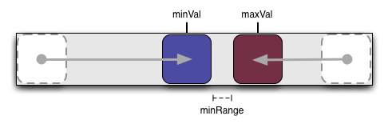
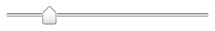

YUI 2: Slider
YUI 2: Slider
The Slider component is a UI control that enables the user to adjust values in a finite range along one or two axes. Typically, the Slider control is used in a web application as a rich, visual replacement for an input box that takes a number as input. The Slider control can also easily accommodate a second dimension, providing x,y output for a selection point chosen from a rectangular region.
On This Page:
Quick Links:
- Examples: Explore examples of the Slider Control in action.
- API Documentation: View the full API documentation for the Slider Control.
- Release Notes: Detailed change log for the Slider Control.
- License: The YUI Library is issued under a BSD license.
- Download: Download the Slider Control as part of the full YUI Library at YUILibrary.com.
Getting Started
To use the Slider control, include the following source files in your web page with the script tag:
<!-- Dependencies --> <script src="http://yui.yahooapis.com/2.9.0/build/yahoo-dom-event/yahoo-dom-event.js"></script> <script src="http://yui.yahooapis.com/2.9.0/build/dragdrop/dragdrop-min.js"></script> <!-- Slider skin (optional) --> <link rel="stylesheet" type="text/css" href="http://yui.yahooapis.com/2.9.0/build/slider/assets/skins/sam/slider.css"> <!-- Slider source file --> <script src="http://yui.yahooapis.com/2.9.0/build/slider/slider-min.js"></script>

YUI Dependency Configurator:
Instead of copying and pasting the filepaths above, try letting the YUI dependency Configurator determine the optimal file list for your desired components; the Configurator uses YUI Loader to write out the full HTML for including the precise files you need for your implementation.
Note: If you wish to include this component via the YUI Loader, its module name is slider. (Click here for the full list of module names for YUI Loader.)
Where these files come from: The files included using the text above will be served from Yahoo! servers. JavaScript files are minified, meaning that comments and white space have been removed to make them more efficient to download. To use the full, commented versions or the -debug versions of YUI JavaScript files, please download the library distribution and host the files on your own server.
Order matters: As is the case generally with JavaScript and CSS, order matters; these files should be included in the order specified above. If you include files in the wrong order, errors may result.
The Slider component is defined by YAHOO.widget.Slider.
Basic HTML/CSS Setup
To create a slider you will need ID references to two page elements: one for the slider background and one for the thumb. The thumb should be a child of the background element.
<div id="sliderbg"> <div id="sliderthumb"><img src="sliderthumbimg"></div> </div>
The elements can be styled as desired, but both elements should be positioned (eg., either relative or absolute). As the background area is clickable, the size of the elements matters. In typical implementations you will need to make the background width (for horizontal sliders) or height (for vertical sliders) equal the total number of pixels you want the slider to be able to move plus the width or height of the thumb element.
The following graphic illustrates the layout for a horizontal Slider (note: not to scale, and the dimensions are just an example, not a recommendation):

Initializing the Slider
The following example creates a horizontal slider object.
var slider; function sliderInit() { slider = YAHOO.widget.Slider.getHorizSlider("sliderbg", "sliderthumb", 0, 200); }
The Slider instance in this example is configured so that it can be moved 200 pixels to the right, and 0 pixels to the left. It is also possible to configure the slider thumb to start in the center of the background, which would make sense if your default landing zone or zero value is in the middle of the range.
The getHorizSlider method produces a horizontal slider. The getVertSlider method produces a vertical slider. The full constructor for both looks like this:
YAHOO.widget.Slider.getHorizSlider(string bgid, string thumbid, int leftup, int rightdown, [int tick])
Where:
- bgid is the id of the slider background
- thumbid is the id of the slider thumb
- leftup is the number of pixels the slider can move left or up (depending on orientation)
- rightdown the number of pixels the slider can move right or down (depending on orientation)
- tick is the optional tick interval (see Setting up Tick Marks for more information)
See the additional topics below in Using Slider, below, or on the Examples page for functional examples.
Using Slider
This section describes customizations to the Slider. It contains these sections:
- Setting Up Tick Marks
- Creating Slider Animation
- Handling Slider Events
- The Region Slider
- Dual Thumb Slider
- Using the Sam skin
Setting Up Tick Marks
Sometimes you may want your slider to move in fixed pixel increments instead of pixel by pixel. Slider supports this with an optional fifth parameter to the getHorizSlider and getVertSlider methods for the tick interval. The following will produce a vertical slider with tick positions every 20 pixels:
var slider; function sliderInit() { slider = YAHOO.widget.Slider.getVertSlider("sliderbg", "sliderthumb", 0, 200, 20); }
When the background is clicked, or the thumb dragged, the slider automatically snaps to the nearest tick position.
Creating Slider Animation
If you include the YUI Animation Utility in your web page, the slider animates when its background is clicked. The animation is a smooth "ease-in" transition unless you define tick marks for the slider. In that case the slider snaps to all tick marks on its way to the final destination.
Animation may not be desirable in some implementations. Some slider animations (for example, those using a CSS background image for the slider thumb) may cause performance issues for some browsers (notably IE). In the case of the thumb performance can be improved by using a slider image (<img src="...">) rather than a CSS background on the slider HTML element.
If you prefer not to use animation, you can disable animation either by omitting the reference to the Animation class or by explicitly turning it off:
var slider; function sliderInit() { slider = YAHOO.widget.Slider.getHorizSlider("sliderbg", "sliderthumb", 100, 100); slider.animate = false; }
Handling Slider Events
The Slider component fires these three events:
| Event | When | Description |
|---|---|---|
change |
Continually when dragging the thumb OR once after a move caused by clicking the background | Indicates change in the thumb's position |
slideStart |
Once at the beginning of a slide operation | Indicates the moment the thumb begins moving |
slideEnd |
Once after the thumb reaches its destination | Indicates the completion of a thumb drag or thumb move in response to a background click |
Additionally, change event subscribers are passed the number of pixels the thumb has moved from the position it was in when the component was initialized. When a thumb is initially positioned in the center, for example, this value will be negative when the thumb is moved left or up (depending on orientation).
var slider = YAHOO.widget.Slider.getHorizSlider("sliderbg", "sliderthumb", 0, 200); slider.subscribe('change', function (newOffset) { YAHOO.log("Thumb is now " + newOffset + " pixels from its starting position"); myElement.innerHTML = newOffset; }); slider.subscribe("slideStart", function() { YAHOO.log("Slider is a go!"); YAHOO.util.Dom.setStyle(myElement,'background-color','#9f9'); }); slider.subscribe("slideEnd", function() { YAHOO.log("The thumb has arrived"); YAHOO.util.Dom.setStyle(myElement,'background-color','#9f9'); // Move the thumb to an increment of 10 pixels // (see using ticks for a better option) var val = slider.getValue(), roundedVal = val - (val % 10); // Note: DO NOT attempt slider.setValue(x) here. // You CAN call setValue in a setTimeout from here, though. if (val !== roundedVal) { setTimeout(function () { slider.setValue(roundedVal); },0); } });
The Region Slider

A two-dimensional Slider is referred to as a Region Slider. Region Sliders report two values in the change event (x offset, y offset) and have their own method for setting value in JavaScript: setRegionValue takes x offset and y offset as arguments, followed by the boolean flag for skipping animation. Design considerations regarding range and thumb width apply in both vertical and horizontal dimensions.
The following code sample illustrates the instantiation of a Region Slider whose thumb can move 0 pixels to the left, 300 to the right, 0 up, and 400 down. The second line illustrates setting the thumb position by script to a position of 263 on the x-axis and 314 on the y-axis.
var slider = YAHOO.widget.Slider.getSliderRegion("sliderbg", "sliderthumb", 0, 300, 0, 400); slider.setRegionValue(263, 314, true);
The Dual Thumb Slider
Another Slider variation is the DualSlider, a horizontal or vertical Slider with two movable thumbs. At its core, the DualSlider is just two Sliders sharing the same background element.
The Slider instances that compose the DualSlider are stored in properties minSlider and maxSlider. If you need to set specific Slider configurations, such as turning off animation, do the following:
var dualSlider = YAHOO.widget.Slider.getHorizDualSlider( "sliderbg","minthumb","maxthumb",200); // Turn off thumb animation for the DualSlider dualSlider.minSlider.animate = false; dualSlider.maxSlider.animate = false;
change event subscribers are passed the DualSlider instance as the first parameter. The minSlider or maxSlider instance is passed as the parameter to slideStart and slideEnd subscribers (depending on which thumb is activated).
DualSliders maintain two read only properties, minVal and maxVal, for the current positions of the two thumbs. To set the values in your code, use methods setMinValue(n), setMaxValue(n), or setValues(n,n).
By default, DualSlider will let the thumbs bump up against one another, but not overlap. Additional space can be maintained between the thumbs using the minRange property.
var dualSlider = YAHOO.widget.Slider.getHorizDualSlider( "sliderbg","minthumb","maxthumb",200); // Maintain a minimum of 10px distance between the inner edges of the thumbs dualSlider.minRange = 10;
Keep in mind that minVal and maxVal are calculated from the center of the thumbs. Unless the minRange is overridden to allow the thumbs to overlap, the minimum value difference will be the sum of the inner portion of the thumbs from their respective mid points.
The min and max thumbs must both be initially position: absolute at the zero point on the background element. DualSlider will place the max thumb at the end of the range during initialization. You may request specific initial values in the sixth argument to the constructor.
#sliderbg { position: relative; height: 20px; width: 220px; background: #fff url(yourbgimage.png) repeat-x 0 0; } #minthumb, #maxthumb { position: absolute; height: 20px; width: 20px; left: 0; /* assumed, but for redundancy */ }
<div id="sliderbg"> <div id="minthumb"><img src="yourthumbimage.png" alt="Thumb for min value in range" height="20" width="20"></div> <div id="maxthumb"><img src="yourthumbimage.png" alt="Thumb for max value in range" height="20" width="20"></div> </div>
(function () { var range = 200, tickSize = 0, initVals = [ 60, 130 ], // Values assigned during instantiation dualSlider; // During instantiation, the min thumb will be moved to offset 60 // and the max thumb to offset 130. dualSlider = YAHOO.widget.Slider.getHorizDualSlider( "sliderbg","minthumb","maxthumb", range, tickSize, initVals); })();
Using the Sam skin
As of version 2.6.0, Slider comes with a Sam skin treatment for Sliders and DualSliders (not region Sliders yet).
Because the range of a Slider is configurable and the size of the elements is implementation specific, there was no way to create CSS for all cases. The Sam skin offering provides standard rendering for a 200 pixel wide horizontal Slider or 200 pixel tall vertical Slider.
<body class="yui-skin-sam"> ... <!-- horizontal slider --> <div id="hsliderbg" class="yui-h-slider" tabindex="-1"> <div id="hsliderthumb" class="yui-slider-thumb"> <img src="path/to/yui/build/slider/assets/thumb-n.gif" alt="slider thumb"> </div> </div> <!-- vertical slider --> <div id="vsliderbg" class="yui-v-slider" tabindex="-1"> <div id="vsliderthumb" class="yui-slider-thumb"> <img src="path/to/yui/build/slider/assets/thumb-bar.gif" alt="slider thumb"> </div> </div> ... </body>
Resulting in these renderings:

If you want a different background or thumb image, the following images are provided in the build/slider/assets/ directory:
| Image | File | Width | Height |
|---|---|---|---|
| thumb-n.gif | 17 | 21 | |
| thumb-s.gif | 17 | 21 | |
| thumb-e.gif | 21 | 15 | |
| thumb-w.gif | 21 | 15 | |
| left-thumb.png | 21 | 20 | |
| right-thumb.png | 21 | 20 | |
| thumb-bar.gif | 48 | 26 | |
| thumb-fader.gif | 58 | 24 | |
| bg-fader.gif | 209 | 28 | |
| bg-h.gif | 209 | 28 | |
| bg-v-e.gif | 36 | 194 | |
| bg-v.gif | 36 | 224 |
Known Issues
-
Sliders report
NaNvalues when rendered in a hidden containerSlider uses DragDrop logic for the thumb placement presuming the elements are in the live DOM and not obscured within an element with
display: none. When rendered off the displayed DOM, the initial calculated reference points are stored asNaN, causing all future reference calculations to result inNaN. If it is not possible to delay the rendering of the Slider until its container is on DOM and displayed, you can use the workarounds illustrated on this page.
YUI on Mobile: Using Slider Control with "A-Grade" Mobile Browsers
About this Section: YUI generally works well with mobile browsers that are based on A-Grade browser foundations. For example, Nokia's N-series phones, including the N95, use a browser based on Webkit — the same foundation shared by Apple's Safari browser, which is found on the iPhone. The fundamental challenges in developing for this emerging class of full, A-Grade-derived browsers on handheld devices are:
- Screen size: You have a much smaller canvas;
- Input devices: Mobile devices generally do not have mouse input, and therefore are missing some or all mouse events (like mouseover);
- Processor power: Mobile devices have slower processors that can more easily be saturated by JavaScript and DOM interactions — and processor usage affects things like battery life in ways that don't have analogues in desktop browsers;
- Latency: Most mobile devices have a much higher latency on the network than do terrestrially networked PCs; this can make pages with many script, css or other types of external files load much more slowly.
There are other considerations, many of them device/browser specific (for example, current versions of the iPhone's Safari browser do not support Flash). The goal of these sections on YUI User's Guides is to provide you some preliminary insights about how specific components perform on this emerging class of mobile devices. Although we have not done exhaustive testing, and although these browsers are revving quickly and present a moving target, our goal is to provide some early, provisional advice to help you get started as you contemplate how your YUI-based application will render in the mobile world.
More Information:
- Challenges of Interface Design for Mobile Devices - YUI Blog article by Lucas Pettinati, Yahoo! Sr. Interaction Designer.
- Performance Research, Part 5: iPhone Cacheability - Making it Stick - YUI Blog article by Tenni Theurer and Wayne Shea from the Yahoo! Exceptional Performance Team
Support & Community
The YUI Library and related topics are discussed on the on the YUILibrary.com forums.
Also be sure to check out YUIBlog for updates and articles about the YUI Library written by the library's developers.
Filing Bugs & Feature Requests
The YUI Library's public bug tracking and feature request repositories are located on the YUILibrary.com site. Before filing new feature requests or bug reports, please review our reporting guidelines.

Slider Control Examples:
- Basic Vertical Slider
- Horizontal Slider with Tick Marks
- RGB Slider Control
- Bottom to top Vertical Slider
- Horizontal Slider with two thumbs
- Dual-thumb Slider with range highlight
Other YUI Examples That Make Use of the Slider Control:
- Basic Features (included with examples for the ProgressBar Control)
- Events (included with examples for the ProgressBar Control)
- Slider Button (included with examples for the Button Control)
- Complex Application (included with examples for the Layout Manager)
YUI Slider on del.icio.us:
All YUI 2.x users should review the YUI 2.8.2 security bulletin, which discusses a vulnerability present in YUI 2.4.0-2.8.1.
- YUI Library
- YUI Home
- YUI 3
- YUIBlog
- Bug Reports/Feature Requests
- YUI on GitHub
- YUI License
- YUI 2.x Resources
- YUI 2 Archives
- YUI 2 Examples
- YUI 2 API Docs
- YUI 2 Discussion Forums

- YUI Components
- Animation
- AutoComplete
- Browser History Manager
- Button
- Calendar
- Carousel
- Charts
- Color Picker
- Connection Manager
- Container
- Cookie
- DataSource
- DataTable
- Dom
- Drag & Drop
- Element
- Event
- Get
- ImageCropper
- ImageLoader
- JSON
- Layout Manager
- Logger
- Menu
- Paginator
- Profiler
- ProfilerViewer
- ProgressBar
- Resize
- Rich Text Editor
- Selector
- Slider
- Storage
- StyleSheet
- SWF
- SWFStore
- TabView
- TreeView
- Uploader
- Yahoo Global Object
- YUI Loader
- YUI Test
- Reset CSS
- Base CSS
- Fonts CSS
- Grids CSS
Copyright © 2013 Yahoo! Inc. All rights reserved.